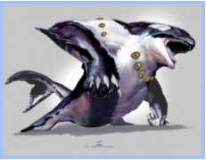
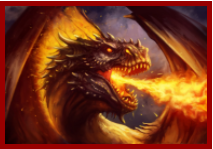
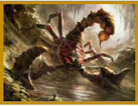
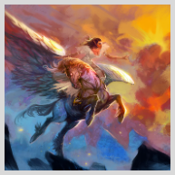

This page is still under construction.
Credits to the FYC Spirit Team!
Four houses, all alike in dignity… Just kidding, this isn’t Shakespeare! This is BHSc… and your FYC presents our house system! Please read through the first page of this document to fully understand what our house system is for, and how it works! Everything beyond the logistics are purely optional, but recommended because who doesn’t love some magical fiction!
What are houses?To cultivate camaraderie and friendly competition in our cohort, FYC has ripped off Harry Potter founded a house system! The houses are Aquatico, Ignacio, Terra, and Ventus, all associated with an essential element for life (water, fire, earth and wind) respectively. Each BHSc ‘24 student has been randomly magically sorted into a house, which will follow them through the year!
Which house am I in?A document with rosters of students in each house can be found here.
What are houses for?The four houses are the pillars of our cohort! We thought it would be fun to have an overarching storyline for our activities in first year, and smaller communities that each student belongs to. Similar to welcome week, points will be awarded to students and their respective houses based on participation and excellence in FYC activities. These points will be recorded on an open spreadsheet with LIVE rankings of each house and individual students!
FYC will be collecting funds from certain events and off merchandise sales, 100% of funds remaining (some will be used for FYC activities) will be donated to charity at the end of the year. This is where houses come in, as ranking will directly correlate with the % of funds donated in your houses name!
All houses must choose a charity to represent at the beginning of the year. Keep your cause in mind when earning points!
How can I get involved in my house?Houses will be meeting monthly/rally with their house lead in their teams channel. These meetings are open to ALL members of the house and can be used to strategize, rally spirit, and build community! Please show up to support! (free points hehe) Otherwise, houses will be incorporated into all FYC events! Get hyped for house specific competitions in trivia, debates, skrribl.io/game nights and so much more!
Aquatico💧☔️🌊
Leader: Ahad Daudi
Mascot: Orion the Orca
Cheer: Orcas, orcas, compatible as an orca-stra, out of all the houses, we’re the KILLER house! (cuz killer whale)
Lore: The tale of the orca originates centuries ago, long before the establishment of McMaster University. Generations hypothesized it was the fierce conflict of the tides from the North and Southeast that gave birth to Orion the orca to set peace and harmony in the seas. Over the course of many eons to present time, the havoc of humanity set disaster on the environment diminishing Orion's capabilities. Tsunamis and floods now strike the world in retaliation, leaving Orion no choice but to appoint our very own Ahad to bring peace back to the seas. Before Orion’s death in the summer of 2020 (yes our favorite year 2020) its final gift to Ahad was the Aquatico house of the First Year council to ensure he would fulfill Orion’s mission.
Ignacio 🔥💥☄️
Leader: Ishaq Siddiqui
Mascot: Dimmy the Dragon
Cheer: GO GO IGNACIO!
Lore: The dragon, a magnificent creature that once reigned supreme over all land, now lies on the brink of extinction. Long ago, these fire-breathing beasts harnessed the power of their flames to spark terror across the four houses. Terra, Ventus, and Aquatico, overwhelmed by their immense power, combined their forces to slay the mighty dragons. Dimmy the Dragon, the last of his species, desperate to maintain the art of firebending, bestowed this magical ability to Ishaq. Their destinies now intertwined, Ishaq masters his bending with Dimmy’s guidance, and Ishaq now takes on the position of firelord. He has gathered a legion of firebending students from McMaster University, who have been deemed worthy to use the fine art. Now, with the battle of the four houses looming on the horizon, the Ignacio house is prepared to reignite its former flame and scorch the battlefield.
Terra 🌎🌞🌻
Leader: Nyah Shah
Mascot: Ostium the Scorpion (ostium means venomous in latin!)
Cheer: Venomous! Ostium! We'll get gold on the podium!
Lore: In a land far, far away, the Earth nation lay barren and forgotten, its traditions passed down only by the last generation of elders. This is where the legend of Ostium the Scorpion begins. The story goes that Ostium, the great and mystical scorpion, once lived as an aquatic lobster, governed under the tyrannical power of Orion. Over the course of a millennia, the wild animals of the Earth were pushed to the brink of extinction as the war between the three houses, Aquatico, Ignacio and Ventus, left them in grave danger. Desperate to liberate the land animals, Ostium abandoned the waters of Aquatico, emerging as the leader of the new Terra nation. In his migration from water to land, Ostium transformed its harmless rounded rear into a noxious stinger tail. This nameless lobster’s fate was sealed through its evolution into a powerful and venomous scorpion, named Ostium after the latin term for venom. Although the land animals were no longer in danger, Ostium was! Feeling threatened by the new house Terra, the three other houses were determined to destroy Ostium’s tail. The wise scorpion that Ostium was, it appointed Nyah to govern the members of the Terra house and went into hiding, awaiting the end of the war. Serving as Ostium’s greater force, Nyah and the Terra students at McMaster University must come together and serve their duty to overcome their foes and triumph, finally allowing Ostium to return to its beloved Terra homeland.
Ventus🌪💨🌬
Leader: Michael Wang
Mascot: Caello the Pegasus
Cheer: Ventus, ventus, our might is tremendous
Lore: The vaward of Ventus bethinks oneself of the golden era of ages past. Many eons pri’r, the house of Ventus’ epic hadst its genesis in the wills of the Anemoi—four ancient winds of Greek mythos, hath led by a Pegasus nam’d Caello, former master of the skies. Millenia hath passed, power shifted, and Ventus becameth a shadow of its former glory. The house of Ventus hath believed yond its creators hadst masterless’t; however, Caello has returned, did saddled by a new sponsor, Michael, did prepared to usurp the reigneth of Ignacio, Terra, and Aquatico. The battlefield hast shift’d from blasted, ancient wastelands to Zoom and Microsoft teams, but the contest remains the same, and only one house shalt emerge victorious.
Have you seen our houses video yet? :0
Here's a calendar with all our upcoming events and initiatives.